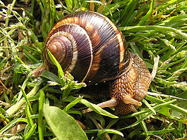

SPECIJALITETI
Puževo meso je najzdravije meso za konzumaciju. Nema štetnog kolesterola, nema masnoća. Samo zdravlje.
Novo u ponudi! Naručite odmah! Specijalna ČOKOLADA od puža koja će vas ostaviti bez daha
S obzirom na to, kao dodatak smo vam pripremili čak i recept, kao ideju za Vaš ručak ukoliko se odlučite naručiti naše puževe.
Sastojci za 2 osobe
- 12 kom. kuhanih puzeva
- maslac
- cesnjak, ljutika, persin
- sol i svjeze mljeveni papar
Priprema
- Cesnjak, ljutiku i persin sitno kosani pomjesati sa maslacem uz dodatak soli i mljevenog papra, staviti u svaku kucicu na dno komadic pomade, pa puza i zatvoriti pomadom..
- Zapeci oko 10 minuta u pecnici na umjerenoj temperaturi (predhodno dobro zagrijanoj) te odmah servirati .. i evo to je to.. Dobar Vam Tek!
- Posluživanje:dok kucice stoje uspravno za vrijeme pecenja posipajte po plehu sol..Obicno serviram 6 puzeva po osobi..
